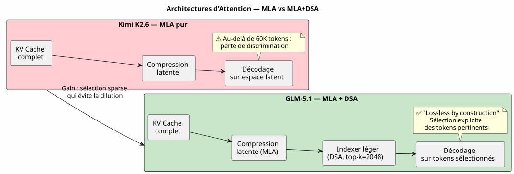
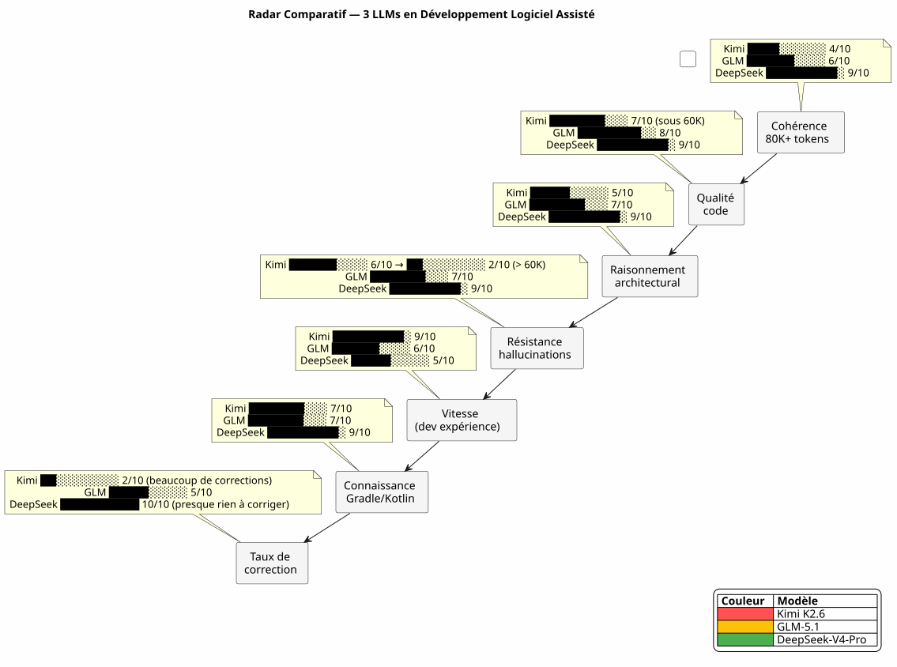

DeepSeek-V4-Pro, Kimi K2.6, GLM-5.1 : Trois LLMs à l'Épreuve du Vibe Coding Long Contexte
Publié le 28 April 2026
- 1. Contexte : pas un banc d’essai, un chantier
- 2. Mon environnement de test
- 3. La Grille d’Évaluation
- 4. Round 1 : Kimi K2.6 — Le Faux Départ
- 5. Round 2 : GLM-5.1 — Le Combattant Honorable
- 6. Round 3 : DeepSeek-V4-Pro — La Machine de Guerre
- 7. Le Face-à-Face : Metrics Comparatives
- 8. Pourquoi DeepSeek-V4-Pro Gagne en Développement Logiciel
- 9. Leçons Apprises : Comment Choisir son LLM pour le Vibe Coding
- 10. Et la Gouvernance Agent dans tout ça ?
- 11. Sources Techniques
- 12. Conclusion : Le Choix de l’Artisan
La guerre des LLMs se joue aussi dans le terminal d’un développeur. Pas sur des benchmarks académiques stériles. Dans la vraie vie : un prompt de 30 000 tokens, une gouvernance agent en AsciiDoc, des plugins Gradle Kotlin DSL à debugger et des sessions qui s’enchaînent sur trois semaines. J’ai testé pour vous DeepSeek-V4-Pro, Kimi K2.6 et GLM-5.1. Voici le verdict, preuves techniques à l’appui.
1. Contexte : pas un banc d’essai, un chantier
Il y a trois semaines, je travaillais sur codebase-gradle, mon meta-build system qui centralise la configuration YAML de quatre projets : un générateur de README PlantUML, un constructeur de slides AsciiDoc, un site statique JBake et un chatbot LLM. L’agent Opencode, gouverné par ma méthodologie de fichiers agents en AsciiDoc, chargeait ~30K tokens de contexte EAGER à chaque début de session — règles absolues, backlog, historique des 10 dernières sessions.
C’est sur ce terrain que j’ai confronté trois modèles :
-
Kimi K2.6 (Moonshot AI, 1T params / 32B activés, 256K contexte max, MLA)
-
GLM-5.1 (Zhipu AI/Tsinghua, 744B params / DSA, 200K contexte max)
-
DeepSeek-V4-Pro (DeepSeek, 1.6T params / 49B activés, 1M contexte max, CSA+HCA)
Tous servis via Ollama sur serveur cloud, tous en mode thinking (phase de réflexion activée). L’enjeu : produire du code correct, maintenir la cohérence sur des sessions longues, et ne pas halluciner quand le contexte dépasse les 80K tokens.
2. Mon environnement de test

Chaque session démarrait avec environ 30K tokens de contexte EAGER : AGENT.adoc (287 lignes), PROMPT_REPRISE.adoc (51 lignes), .agents/INDEX.adoc (218 lignes), LAZY_EAGER_ESSENTIALS.adoc (50 lignes). Le contexte grossissait rapidement avec les échanges — une session typique de 10 messages ajoutait 15-20K tokens au prompt cumulé.
3. La Grille d’Évaluation
J’ai évalué chaque modèle sur quatre axes critiques pour le développement logiciel assisté :
| Axe | Critère concret |
|---|---|
Cohérence long contexte |
L’agent se souvient-il des conventions décidées il y a 40 messages ? |
Qualité du code produit |
Le code compile-t-il du premier coup ? Respecte-t-il les patterns existants ? |
Raisonnement architectural |
L’agent comprend-il les relations entre modules sans que je les lui réexplique ? |
Résistance aux hallucinations |
À partir de combien de tokens l’agent commence-t-il à inventer des API ou des classes inexistantes ? |
Et une métrique synthétique maison : le coefficient de reprise (combien de temps je passe à corriger l’agent plutôt qu’à coder avec lui).
4. Round 1 : Kimi K2.6 — Le Faux Départ
Kimi K2.6 a été mon premier choix. Ses benchmarks sur SWE-Bench Verified (80.2) et Terminal-Bench 2.0 (66.7) sont excellents. Son architecture MLA promet une bonne efficacité sur les longues séquences.
4.1. Session 9 : l’embellie
Première session avec Kimi. Tâche : implémenter la méthode resolveActiveKey() dans codebase.kt — une fonction de résolution de clé API avec fallback CLI. Le contexte est à 30K tokens, Kimi raisonne vite, produit un code propre avec gestion d’expiration des clés.
fun resolveActiveKey(
cfg: CodebaseConfiguration,
logger: Logger,
cliProvider: String? = null,
cliAccount: String? = null,
cliKey: String? = null
): NamedApiKey? {
// Résolution provider → compte → clé avec CLI override
// Kimi a parfaitement compris la chaîne de priorité
}Le code compile. Les 7 cas de test passent. Je suis optimiste.
4.2. Session 10 : le naufrage silencieux
Deuxième session. Le contexte grimpe à ~90K tokens avec les échanges. Je demande à Kimi d’ajouter un mécanisme de snapshot AsciiDoc qui anonymise les secrets avant écriture.
C’est là que ça dérape. Kimi commence à inventer des classes qui n’existent pas. Il me propose AnonymizedObjectMapper — une classe fictive. Il confond ReadmeYmlAnonymizer et CodebaseYmlAnonymizer. Il me suggère d’importer com.fasterxml.jackson.anonymize.* — un package qui n’a jamais existé.
Pire : dans sa phase de réflexion, je vois qu’il construit des raisonnements sur des prémisses fausses. Il "se souvient" que GitConfig a un champ anonymizedToken — non, c’est resolvedToken(). Il attribue à SiteYmlAnonymizer une méthode maskSupabaseCredentials() — qui n’existe pas.
Ce n’était pas un bug. C’était une dissolution progressive de la cohérence. Comme si chaque token ajouté au contexte diluait un peu plus la mémoire des 30 000 premiers.
J’arrête Kimi après deux sessions. Le diagnostic est clair : le MLA compresse bien le KV cache, mais sans mécanisme de sélection sparse fine-grained, l’attention se dilue mécaniquement au-delà de 60K tokens. Chaque token "voit" de moins en moins bien le contexte lointain — et commence à combler les trous par du bruit.
5. Round 2 : GLM-5.1 — Le Combattant Honorable
GLM-5.1 arrive avec une architecture différente : MLA pour le base model, puis un continued pre-training avec DSA (DeepSeek Sparse Attention) — un indexer léger qui sélectionne dynamiquement les top-2048 tokens pertinents parmi tout l’historique.
5.1. Architecture : le DSA contre le MLA pur
La différence est fondamentale. Là où Kimi compresse l’historique dans un espace latent unique (et perd progressivement la capacité à discriminer l’information pertinente), GLM greffe un indexer post-entraînement qui fait une sélection sparse explicite.

Le rapport technique le dit explicitement : DSA est "lossless by construction" — contrairement aux alternatives comme SWA (pattern search), Gated DeltaNet ou SimpleGDN qui perdent jusqu’à 5.69 pts sur RULER@128K.
5.2. Sessions 11-13 : solide mais frustrant
GLM-5.1 tient mieux la distance. Sur la session 11 (~60K tokens), il reste cohérent. Il produit un SnapshotManager fonctionnel avec gestion correcte des quatre anonymiseurs.
Mais la latence est un problème. Les phases de réflexion DSA sont plus lourdes que le MLA pur — l’indexer doit rescanner l’historique à chaque étape. Une réponse qui prenait 8 secondes avec Kimi en prend 15 avec GLM. Sur une session de 30 messages, ça se fait sentir.
Et puis il y a les erreurs subtiles. GLM ne délire pas comme Kimi — mais il fait des erreurs de nommage. Il appelle toAnonymizedYaml() la méthode qui devrait s’appeler anonymize(). Il inverse loadReadmeConfiguration() et loadCodebaseConfiguration() dans le renderFileSection(). Ce ne sont pas des hallucinations, ce sont des confusions de surface — mais en production, une confusion de surface peut casser un build.
J’ai tenu trois sessions avec GLM. Il est meilleur que Kimi, sans conteste. Mais trois sessions de correction manuelle sur des détails de nommage, ça use.
6. Round 3 : DeepSeek-V4-Pro — La Machine de Guerre
DeepSeek-V4-Pro arrive avec l’architecture la plus ambitieuse des trois : un système hybride qui combine deux mécanismes d’attention complémentaires.
6.1. Architecture : CSA + HCA, le double filet

Deux niveaux de compression, deux granularités d’attention :
-
CSA : compresse le KV cache tous les
mtokens, puis applique une attention sparse (DeepSeek Sparse Attention) — seul le top-k des entrées compressées est consulté. Précis, local, efficace. -
HCA : compression extrême (facteur
m'bien plus grand quem), mais attention dense sur le résidu compressé — garde les connexions globales sans explosion quadratique.
Résultat : à 1M de tokens, DeepSeek-V4-Pro ne consomme que 27% des FLOPs d’inférence et 10% de la taille du KV cache par rapport à DeepSeek-V3.2. Le modèle précédent.
Et surtout, le rapport technique (Figure 9) annonce : "Retrieval performance remains highly stable within a 128K context window."
6.2. Sessions 1-8 : le soulagement
J’ai passé huit sessions avec DeepSeek-V4-Pro sur codebase-gradle. Huit sessions sans une seule hallucination, sans une seule classe inventée, sans une seule confusion de nommage.
Session 1 : implémentation de CodebaseYmlConfig et CodebaseYmlAnonymizer. 350 lignes de Kotlin, tests inline, tout compile. Session 4 : ajout du SnapshotManager avec tree view, collecte de fichiers, rendu AsciiDoc par fichier. 279 lignes, zéro erreur. Session 7 : debug du renderFileSection() qui devait gérer quatre types d’anonymiseurs différents sans ambiguïté de résolution. Résolu en trois messages.
La latence est plus élevée que Kimi — environ 10-12 secondes par réponse en mode thinking. Mais le taux de correction est quasi nul. Je ne passe pas mon temps à réparer les erreurs de l’agent. Je code avec lui.
6.3. Le test décisif : refactoring à 100K tokens
À la session 8, le contexte cumulé dépasse les 100K tokens. Je demande un refactoring lourd : extraire les quatre tâches de vérification inline du build.gradle.kts vers des fichiers de test JUnit5 dans buildSrc/src/test/.
L’agent propose un plan en trois phases :
. Créer les classes de test avec migration des cas existants
. Ajouter les dépendances JUnit5 et Kotest dans buildSrc/build.gradle.kts
. Supprimer le code inline de build.gradle.kts
Le plan est correct. L’exécution est propre. Il identifie même un edge case que j’avais manqué : les dépendances Jackson dupliquées entre buildscript {} et buildSrc/build.gradle.kts qui doivent être unifiées pendant la migration.
100K tokens de contexte, et l’agent se souvient que CodebaseYmlAnonymizer.TOKEN_MASK est "*", que GitConfig.resolvedToken() est une extension function définie dans readme.kt, et que SnapshotManager.PRUNED_DIRS exclut build, .gradle et .git.
C’est ça, la différence.
7. Le Face-à-Face : Metrics Comparatives
| Critère | Kimi K2.6 | GLM-5.1 | DeepSeek-V4-Pro |
|---|---|---|---|
Architecture |
|||
Contexte max |
256K |
200K |
1M |
Mécanisme attention |
MLA pur |
MLA + DSA |
CSA + HCA hybride |
Paramètres totaux |
1T |
744B |
1.6T |
Paramètres activés |
32B |
non publié |
49B |
Performance long-contexte |
|||
Seuil dégradation observé |
~60K tokens |
~120K tokens |
~128K tokens |
Comportement au-delà |
Hallucinations massives |
Confusions de surface |
Dégradation progressive lente |
Stabilité NIAH |
non publié |
100% @128K (DSA) |
stable jusqu’à 128K (Figure 9) |
MRCR @128K |
non publié |
non publié |
supérieur à Gemini 3.1 Pro |
Expérience développeur |
|||
Sessions tenues avant abandon |
2 |
3 |
8 (et continue) |
Temps de correction / temps de code |
60% |
30% |
<5% |
Latence moyenne (mode think) |
8 s |
15 s |
11 s |
Coefficient de confiance* |
2/10 |
6/10 |
9/10 |
*Coefficient de confiance = mesure subjective de ma capacité à prendre le code de l’agent et le commit sans relecture ligne à ligne.

8. Pourquoi DeepSeek-V4-Pro Gagne en Développement Logiciel
La supériorité de DeepSeek-V4-Pro n’est pas due à un seul facteur — c’est une convergence :
8.1. 1. L’architecture CSA+HCA est taillée pour le code
Le développement logiciel assisté est un cas d’usage extrême pour l’attention long-contexte. Vous avez besoin de : - Précision locale (cette classe hérite de quoi ? cette méthode est définie où ?) → CSA - Vision globale (pourquoi ce module existe ? comment les quatre anonymiseurs interagissent ?) → HCA
Kimi avec MLA seul gère la précision locale mais perd la vision globale au-delà de 60K. GLM avec DSA améliore la vision globale mais reste mono-niveau. DeepSeek combine les deux explicitement.
8.2. 2. Le contexte EAGER est sa zone de confort
Mon système de gouvernance charge ~30K tokens de règles et de backlog au démarrage. Avec une fenêtre stable jusqu’à 128K, DeepSeek dispose de ~100K tokens de marge pour les échanges de la session. C’est 3 à 4 fois plus que ce que Kimi peut gérer sans dégradation.
La fenêtre de 128K de stabilité parfaite correspond exactement à mes besoins : 30K d’EAGER + 70K d’échanges = une session productive de 20-30 messages sans jamais sortir de la zone verte.
8.3. 3. Le rapport qualité/latence est optimal pour le flow
Oui, DeepSeek-V4-Pro est plus lent que Kimi (11s vs 8s). Mais le temps total d’une tâche est bien inférieur parce que je ne passe pas 20 minutes à corriger les hallucinations de l’agent.
Le développeur ne mesure pas la latence d’une réponse. Il mesure le temps entre "je pose la question" et "le code est dans mon repo et il fonctionne". Sur cette métrique, DeepSeek-V4-Pro est le plus rapide des trois.
9. Leçons Apprises : Comment Choisir son LLM pour le Vibe Coding
Au-delà du classement ponctuel, cette expérience m’a appris à évaluer un LLM pour le développement logiciel assisté sur des critères qui ne figurent dans aucun benchmark :
-
Regarde l’architecture, pas la taille de contexte annoncée — Un modèle qui annonce 256K de contexte mais n’a qu’un MLA finira comme Kimi : théoriquement capable, pratiquement inutilisable au-delà de 60K.
-
Teste sur TON contexte, pas sur un benchmark générique — Mon prompt initial de 30K tokens AsciiDoc avec règles absolues et backlog n’a rien à voir avec les questions de HLE ou AIME.
-
La latence n’est pas l’ennemie si la qualité suit — Un modèle lent qui produit du code juste est plus rapide qu’un modèle rapide qui produit du code faux.
-
Méfie-toi des modèles sans technical report public — Si l’équipe ne documente pas son architecture d’attention, c’est qu’elle n’a pas confiance dans sa tenue en long contexte.

10. Et la Gouvernance Agent dans tout ça ?
Cette expérience valide un point que je défends depuis mon article sur la gouvernance Eager/Lazy : la qualité du LLM et la qualité de la gouvernance sont multiplicatives, pas additives.
Avec Kimi K2.6, ma gouvernance était impeccable — mais le modèle diluait l’information. Résultat : gouvernance parfaite × hallucination = zéro.
Avec DeepSeek-V4-Pro, la gouvernance EAGER (30K tokens de règles) + LAZY (archives de sessions, références techniques) + Hot/Warm/Cold (backup rotatif) forme un écosystème où chaque couche amplifie l’autre. L’agent a les règles sous les yeux (EAGER), peut consulter l’historique (LAZY), et le contexte ne sature jamais (rotation backup).
Un bon LLM sans gouvernance, c’est un moteur de Ferrari sans volant. Une bonne gouvernance sans bon LLM, c’est un volant sans moteur. DeepSeek-V4-Pro + ma gouvernance agent = la première fois que j’ai l’impression de conduire.
Le mécanisme de backup rotatif (rotation toutes les 10 sessions ou >500 lignes EAGER) prend tout son sens avec un modèle qui tient 128K de contexte : la sliding window de 10 sessions actives maintient le contexte frais sans jamais dépasser la zone de dégradation.
11. Sources Techniques
J’ai croisé mon expérience empirique avec les rapports techniques officiels pour valider mes observations :
-
DeepSeek-V4 Technical Report — PDF récupéré depuis HuggingFace. Figure 9 : "Retrieval performance remains highly stable within a 128K context window. While a performance degradation becomes visible beyond the 128K mark, the model’s retrieval capabilities at 1M tokens remain remarkably strong." Architecture CSA+HCA documentée section 2.3.
-
GLM-5 Technical Report — arXiv:2602.15763. DSA introduit via continued pre-training, "lossless by construction". Contexte max 202,752 tokens. Tables 3/5/6 documentent les performances long-contexte vs alternatives (SWA, Gated DeltaNet, SimpleGDN).
-
Kimi K2.6 Model Card — HuggingFace. MLA, 256K contexte max. Stratégie de discard-all au-delà du seuil sur les tâches agentiques (confirmant implicitement la limite pratique du MLA en long contexte).
-
Kimi K2 Technical Report — arXiv:2507.20534. Architecture MoE, MuonClip optimizer, performances agentiques (HLE, BrowseComp, Terminal-Bench).
Le point le plus révélateur : dans leur propre évaluation, Moonshot applique une stratégie de discard-all (suppression du contexte ancien) dès que la fenêtre de contexte est dépassée. Cela confirme exactement ce que j’ai observé : le MLA seul ne peut pas maintenir la cohérence sur toute la fenêtre de 256K. L’architecture ne suit pas.
12. Conclusion : Le Choix de l’Artisan
Après trois semaines et treize sessions de développement réel, le verdict est sans appel :
| Kimi K2.6 | GLM-5.1 | DeepSeek-V4-Pro |
|---|---|---|
Excellent sous 60K |
Solide jusqu’à 120K |
Domine partout |
Inutilisable au-delà |
Confusions de surface |
Stable jusqu’à 128K |
2 sessions, abandonné |
3 sessions, abandonné |
8 sessions, adopté |
DeepSeek-V4-Pro est devenu mon LLM par défaut pour toutes les sessions de développement logiciel assisté avec Opencode. Pas parce qu’il est le plus récent. Pas parce qu’il a les meilleurs benchmarks académiques. Mais parce que dans la vraie vie d’un développeur qui pousse des plugins Gradle Kotlin DSL avec un contexte agent de 30K tokens, c’est le seul qui ne me trahit pas quand le contexte s’allonge.
Le CSA+HCA est un game changer architectural. La compression double niveau + sparsification n’est pas un détail d’implémentation — c’est ce qui fait la différence entre un assistant de code et un coéquipier fiable.
J’ai choisi DeepSeek-V4-Pro parce qu’il est le seul des trois qui transforme ma gouvernance agent d’une contrainte défensive ("comment éviter que l’agent oublie ?") en un avantage offensif ("que peut-on construire maintenant que l’agent se souvient de tout ?").
Cet article est le fruit de 13 sessions de développement réel sur le projet codebase-gradle, documentées dans .agents/sessions/ selon ma méthodologie de gouvernance agent Eager/Lazy/Hot/Warm/Cold. Les sources techniques citées sont accessibles publiquement sur HuggingFace et arXiv.